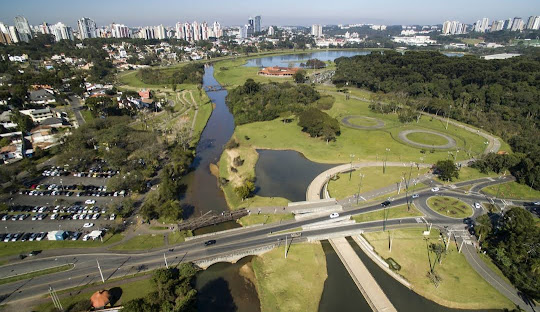
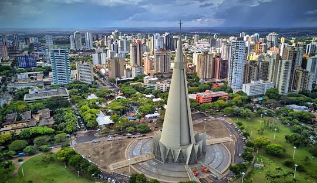
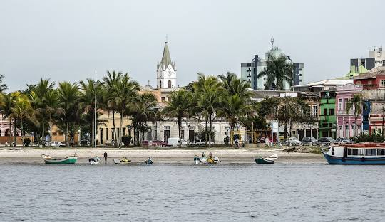

CURITIBA
MARINGÁ
Maringá, situada no noroeste do Paraná, é uma cidade planejada com aproximadamente 430 mil habitantes, reconhecida pela qualidade de vida e infraestrutura. A Catedral Basílica Menor de Nossa Senhora da Glória, com sua torre de 124 metros, é um ícone local. A cidade é um centro educacional e tecnológico, abrigando a Universidade Estadual de Maringá (UEM). O Parque do Ingá é um espaço de lazer e contato com a natureza. Maringá tem uma economia diversificada, com forte presença do agronegócio, comércio e serviços, destacando-se pelo Parque Industrial e a Expoingá.
CHAPADA DOS VEADEIROS
.jpg)
A Chapada dos Veadeiros, em Goiás, é um destino de ecoturismo famoso por suas paisagens espetaculares, com cânions, cachoeiras e rica biodiversidade. O Parque Nacional da Chapada dos Veadeiros, Patrimônio Mundial da UNESCO, oferece trilhas como a dos Saltos e dos Cânions. Alto Paraíso de Goiás, a base para os turistas, é conhecida por seu ambiente esotérico e opções de hospedagem e lazer. A formação rochosa do Vale da Lua e a presença de espécies como lobos-guará e tucanos enriquecem a experiência dos visitantes, tornando a Chapada um santuário natural único no Brasil.
FOZ DO IGUAÇU

Foz do Iguaçu, localizada na tríplice fronteira entre Brasil, Argentina e Paraguai, é famosa pelas Cataratas do Iguaçu, uma das Novas Sete Maravilhas da Natureza, formadas por 275 quedas d'água no Rio Iguaçu. O Parque Nacional do Iguaçu, Patrimônio Mundial da UNESCO, oferece trilhas e passeios emocionantes, como o Macuco Safari. A cidade também abriga a Usina Hidrelétrica de Itaipu, segunda maior do mundo, e reflete uma diversidade cultural e religiosa com atrações como o Templo Budista Chen Tien e a Mesquita Omar Ibn Al-Khattab. Com aproximadamente 260 mil habitantes, Foz é um destino turístico e cultural de destaque.
PARANAGUÁ
Paranaguá, no litoral do Paraná, é a cidade portuária mais antiga do estado, com cerca de 150 mil habitantes. Seu Porto de Paranaguá é um dos maiores da América Latina, essencial para a exportação. O centro histórico preserva construções coloniais e atrativos como o Mercado Municipal do Café e a Igreja de São Benedito. A Ilha do Mel, com suas praias e trilhas, é um destino ecológico renomado. Passeios pela Baía de Paranaguá permitem a observação da rica fauna e flora locais, destacando a importância ambiental da região.